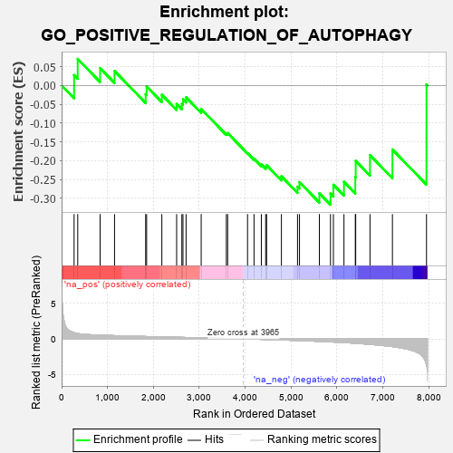
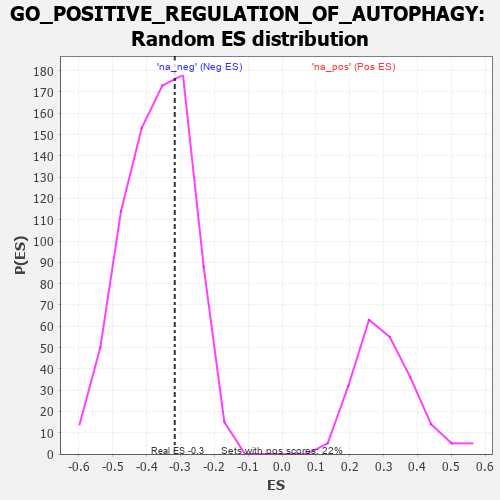

| | | Dataset | 7d |
| Phenotype | NoPhenotypeAvailable |
| Upregulated in class | na_neg |
| GeneSet | GO_POSITIVE_REGULATION_OF_AUTOPHAGY |
| Enrichment Score (ES) | -0.31698215 |
| Normalized Enrichment Score (NES) | -0.86061174 |
| Nominal p-value | 0.66624206 |
| FDR q-value | 0.97287863 |
| FWER p-Value | 1.0 |
Table: GSEA Results Summary

Fig 1: Enrichment plot: GO_POSITIVE_REGULATION_OF_AUTOPHAGY
Profile of the Running ES Score & Positions of GeneSet Members on the Rank Ordered List
| PROBE | GENE SYMBOL | GENE_TITLE | RANK IN GENE LIST | RANK METRIC SCORE | RUNNING ES | CORE ENRICHMENT | | 1 | ULK1 | | | 272 | 0.875 | 0.0276 | No |
| 2 | GSK3A | | | 351 | 0.745 | 0.0704 | No |
| 3 | TFEB | | | 839 | 0.522 | 0.0459 | No |
| 4 | SCOC | | | 1153 | 0.453 | 0.0385 | No |
| 5 | UVRAG | | | 1831 | 0.332 | -0.0233 | No |
| 6 | TRIM5 | | | 1852 | 0.327 | -0.0026 | No |
| 7 | NPRL2 | | | 2184 | 0.278 | -0.0247 | No |
| 8 | HUWE1 | | | 2506 | 0.225 | -0.0492 | No |
| 9 | BAG3 | | | 2620 | 0.209 | -0.0486 | No |
| 10 | KAT5 | | | 2644 | 0.206 | -0.0369 | No |
| 11 | PHB2 | | | 2712 | 0.197 | -0.0314 | No |
| 12 | UFL1 | | | 3041 | 0.144 | -0.0626 | No |
| 13 | MAPK3 | | | 3589 | 0.062 | -0.1271 | No |
| 14 | WAC | | | 3618 | 0.056 | -0.1266 | No |
| 15 | ATG5 | | | 4051 | -0.016 | -0.1799 | No |
| 16 | SESN1 | | | 4192 | -0.041 | -0.1947 | No |
| 17 | ADRB2 | | | 4352 | -0.068 | -0.2099 | No |
| 18 | CDC37 | | | 4446 | -0.084 | -0.2156 | No |
| 19 | LRRK2 | | | 4467 | -0.087 | -0.2120 | No |
| 20 | PIM2 | | | 4789 | -0.155 | -0.2414 | No |
| 21 | FLCN | | | 5140 | -0.235 | -0.2689 | No |
| 22 | HDAC6 | | | 5183 | -0.244 | -0.2569 | No |
| 23 | LARP1 | | | 5616 | -0.349 | -0.2866 | No |
| 24 | ATG7 | | | 5858 | -0.420 | -0.2873 | Yes |
| 25 | STK11 | | | 5922 | -0.443 | -0.2639 | Yes |
| 26 | ROCK1 | | | 6152 | -0.520 | -0.2560 | Yes |
| 27 | RALB | | | 6399 | -0.617 | -0.2434 | Yes |
| 28 | HSPB8 | | | 6408 | -0.621 | -0.2005 | Yes |
| 29 | GSK3B | | | 6719 | -0.768 | -0.1852 | Yes |
| 30 | MFN2 | | | 7208 | -1.081 | -0.1703 | Yes |
| 31 | DAPK1 | | | 7950 | -3.767 | 0.0026 | Yes |
Table: GSEA details [plain text format]

Fig 2: GO_POSITIVE_REGULATION_OF_AUTOPHAGY: Random ES distribution
Gene set null distribution of ES for GO_POSITIVE_REGULATION_OF_AUTOPHAGY